ㅤ
О разделе.
О разделе.
Этот раздел — дань уважения всем игрокам, которые были частью нашего клана и имели отношение к ВПИ. Все, кто добавлен сюда, больше не связаны с нашим сервером, но они внесли значительный вклад в его развитие. Это касается как их игрового опыта, так и идей.
ㅤ
ㅤ
История Участников.
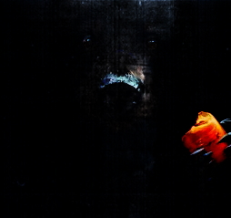
— Медведь
Медведь был приглашен на сервер в качестве "эксперта" и сыграл ключевую роль в запуске ВПИ как отдельной самостоятельной категории. Под его руководством был осуществлен первый запуск ВПИ, что стало важным шагом в развитии нашего сервера. Медведь был приглашен с другого сервера, где он уже имел опыт в создании карт и организации игр. Его знания и опыт помогли нашему серверу сделать значительный шаг вперед.
— Читать
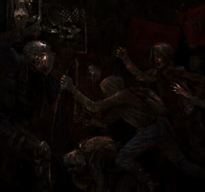
— Анархик
Анархик — один из старейших участников нашего клана. Он возглавил одно из самых успешных ВПИ на нашем сервере, что стало важным этапом в развитии нашего сообщества. Анархик привнес множество изменений и инноваций, которые значительно повлияли на наш сервер. Его ВПИ стало первым шагом в направлении текстовика, что открыло новые горизонты для нашего сообщества.
— Читать
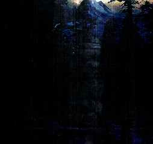
— ZAA
ZAA — один из старейших участников нашего клана. Вместе с главой клана и Конохой он участвовал в различных играх на других серверах, что позволило ему накопить ценный опыт. ZAA активно участвовал в жизни нашего клана, привнося новые идеи и подходы. Он также обладает высшей наградой "генералисимуса" за ряд блестящих побед, что подчеркивает его вклад в развитие нашего сообщества.
— Читать
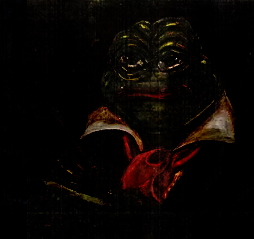
— Pepe
Pepe — бывший участник нашего клана, который активно участвовал в деятельности нашего сообщества на протяжении длительного времени. Он привнес множество изменений и укрепил определенные идеи, что значительно повлияло на развитие нашего сервера. Pepe проводил множество ВПИ, что помогло укрепить позиции нашего клана и привлечь новых участников.
— Читать
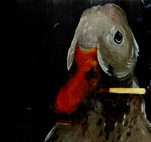
— Krya
Krya — друг Pepe, который также был активным участником нашего клана. Он внес значительный вклад в развитие нашего сообщества, привнося новые идеи и подходы. Krya участвовал в различных мероприятиях и ВПИ, что помогло укрепить позиции нашего клана и привлечь новых участников.
— Читать
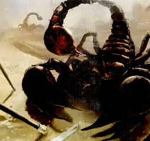
— Скорпион
Скорпион — в прошлом знаменитый игрок, известный множеством скандалов и срачей. Однако его вклад в развитие нашего сервера нельзя недооценивать. С его подачи был создан второй ВПИ сервер, что открыло новые возможности для нашего сообщества. Скорпион пригласил множество людей и открыл сервер множеству игроков, что значительно расширило нашу аудиторию.
— Читать
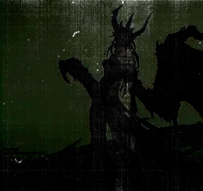
— Шизофрения
Шизофрения — один из старейших участников нашего клана. Он участвовал в совете кураторов и внес множество изменений в механику игры и её суть. Его вклад был значительным, и он помог нашему серверу развиваться и становиться лучше.
— Читать
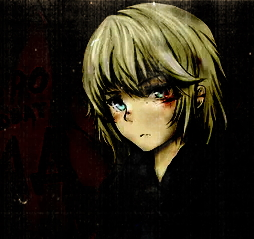
— Азерия
Азерия — один из ключевых игроков нашего сервера. Он внес большой вклад в развитие нашего сообщества, с его подачи наш сервер полностью окунулся в мир "альтернативных ВПИ". Его стиль и подход прочно вошли в систему нашей игры и навсегда оставили отпечаток. Азерия помог нашему серверу стать более разнообразным и интересным.
— Читать
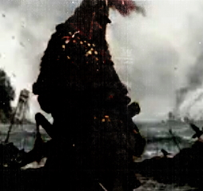
— Тува
Тува — бывший лидер нашего клана. Он предпринял первую попытку создать ВПИ сервер от нашего клана с четкими механиками и сюжетом. Этот опыт стал важным шагом в развитии нашего сообщества и был использован позже. Тува заложил основы для дальнейшего развития нашего сервера.
— Читать
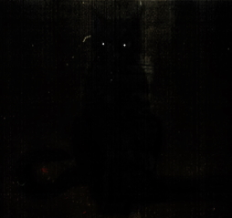
— Лир
Лир — участник нашего сервера, который в будущем создал один из крупнейших текстовых серверов по ВПИ. Он вдохновился нашими играми и начал развиваться в своем направлении. Лир привнес множество идей и подходов в управление, которые мы позже использовали в нашем сервере.
— Читать
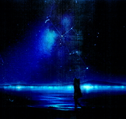
— Орион
Орион — человек, который создал ВПИ, где играло около 3-х человек с нашего сервера. С его подачи мы переняли очень многое в подходе проведения, карт и механик. Орион стал одним из идейных вдохновителей нашего нынешнего сервера, его вклад в развитие нашего сообщества был значительным.
— Читать
ㅤ